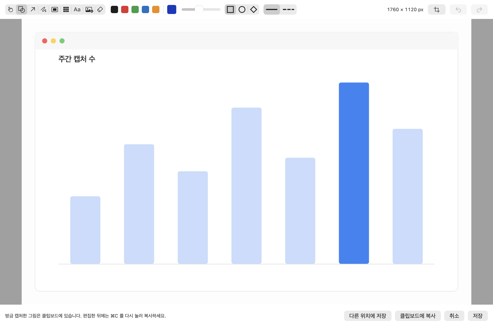

설치 가이드
서명 없는 앱이라 첫 실행 경고를 한 번 넘기고, 화면 기록 권한을 한 번 켜야 합니다. 둘 다 처음 한 번만 합니다.
Applications 로 끌어다 놓기
DMG 를 열면 앱과 Applications 바로가기가 나란히 있습니다. 앱을 폴더 쪽으로 끕니다. 쓰던 버전은 덮어써도 설정이 남습니다.
첫 실행 경고 넘기기
앱을 처음 열면 Apple 이 악성 소프트웨어를 검사할 수 없다는 알림이 뜨고 열리지 않습니다. Apple 인증서로 서명·공증하지 않아서 그렇습니다. 알림을 닫고 시스템 설정에서 한 번 허용해 줍니다.
- 시스템 설정 을 열고 개인정보 보호 및 보안(Privacy & Security) 을 고릅니다.
- 보안(Security) 까지 내리면 awesomecut 이 차단되었습니다 라는 줄이 있습니다. 확인 없이 열기(Open Anyway) 를 누릅니다.
- 다시 뜨는 대화상자에서 확인 없이 열기(Open Anyway) 를 한 번 더 누릅니다. 암호를 물으면 넣습니다.
화면 기록 권한 켜기
앱이 열리면 설정 창이 먼저 뜹니다. 첫 항목이 화면 기록 권한입니다. 시스템 설정 열기 를 누르면 해당 목록이 열리니 거기서 awesomecut 을 켭니다. macOS 는 이 권한을 화면 및 시스템 오디오 기록 으로 부르지만 오디오는 녹음하지 않습니다.
앱 다시 시작
화면 기록 권한은 새로 뜬 앱에만 붙습니다. 방금 켠 권한은 실행 중인 앱에 적용되지 않아서, 단축키를 눌러도 아무 일도 없는 것처럼 보입니다.
앱이 권한이 켜진 것을 알아채면 이렇게 물어봅니다. 다시 시작 을 누르면 알아서 껐다 켜집니다. 안 물어보면 메뉴바 아이콘에서 종료 하고 직접 다시 엽니다.
⇧⌘2 로 첫 캡처
드래그해서 손을 떼면 그 그림이 바로 클립보드에 담기고 편집 창이 열립니다. 손본 뒤에는 ⌘C 를 한 번 더 누릅니다. ⌘S 는 정해 둔 폴더에 저장.

안 될 때
권한을 켰는데도 캡처가 안 됩니다
앱을 껐다 켜면 됩니다. 권한은 새로 실행된 앱에만 붙습니다. 앱이 알아채면 다시 시작할지 물어봅니다.
업데이트하면 권한을 또 물어봅니다
맞습니다. 인증서 없이 서명하므로 버전이 바뀌면 macOS 는 다른 앱으로 봅니다. 새 버전마다 [시스템 설정] > [개인정보 보호 및 보안] > [화면 및 시스템 오디오 기록] 에서 다시 켜 주세요.
단축키가 안 먹습니다
macOS 나 다른 앱이 쓰는 조합은 등록되지 않습니다. 컨트롤 바의 단축키 항목에서 다른 조합으로 바꾸세요.
제거하고 싶습니다
Applications 에서 휴지통으로 옮기면 됩니다. 저장소를 받아 쓰고 있다면 ./uninstall.sh 가 LaunchAgent 까지 정리합니다.